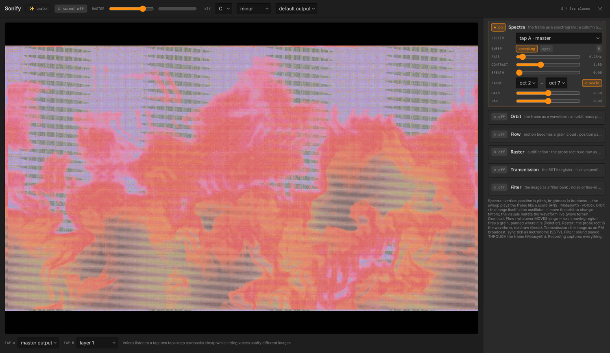
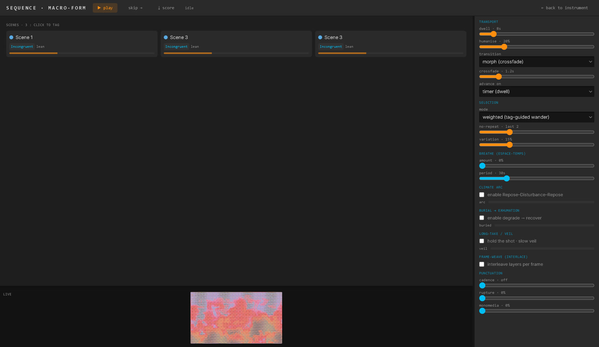
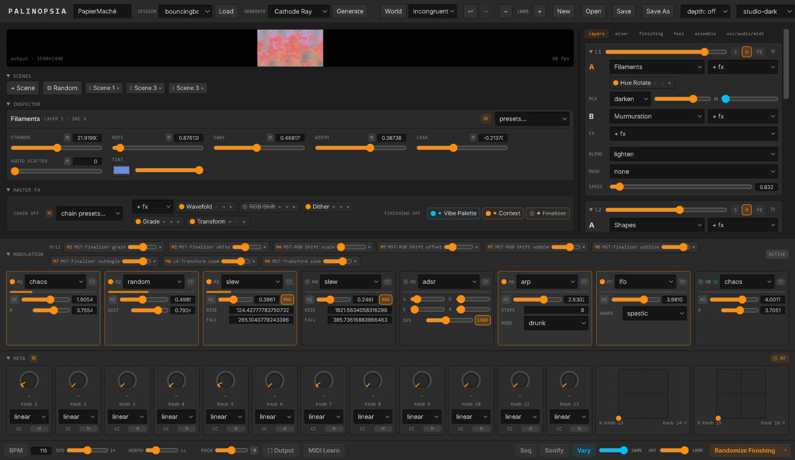
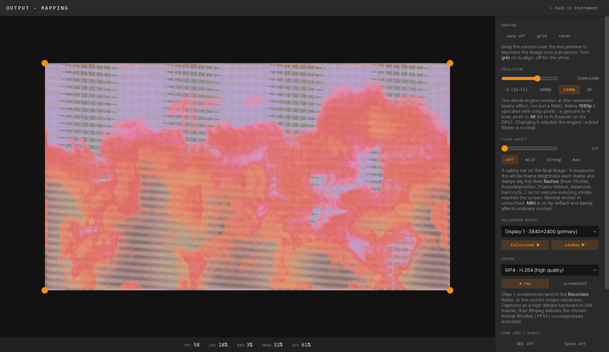

Palinopsia · Opsia · a visual instrument
A visual instrument you play.
Palinopsia is a WebGL2 compositor you perform, not a tool you wire. It stacks layers of generated and treated video, masters the whole picture through a fixed set of stages, and lets you steer every parameter live: by hand, by an internal modulation brain, over OSC and MIDI, or with your own body.
Free and open source, for Windows, macOS and Linux. The name is the persistence of a visual image after the stimulus is gone.

Download
The latest release for every platform. Built by CI, unsigned for now.
Windows
Installer (.exe) or a portable single file. x64.
Get the latest ↗SmartScreen may warn on an unsigned build: More info → Run anyway.
macOS
A .dmg for Apple Silicon (arm64) and Intel (x64).
Get the latest ↗Un-notarized: right-click the app → Open, or run xattr -cr on it once.
What it can make
Every frame below was built by the app alone, no external footage. Pick a recipe from Generate and it composes the whole session for you.


Your first five minutes
- You land on a fresh, random one-layer scene. Press R a few times. Each press re-rolls the whole instrument (sources, effects, blends, modulators) from curated ranges and crossfades over the morph time. This is the fastest way to feel the range of the thing.
- Open the Feel tab with G and drag Density, Flow and Drift. These are whole-image macros: one slider reshapes the entire picture at once. Double-click any slider to reset it to neutral.
- Click a layer's source (the A chip) and play with its parameters in the Inspector under the preview. Every slider carries a dice for a curated random value, a preset menu, and an M button to attach a modulator.
- Keep something you like: click + in the scene bank to save it, then press 1–9 to recall your scenes live. Recalls morph over the same crossfade time.
- Go big: press O for the Output page, pick a display, and go fullscreen. Or reach for Generate in the toolbar: 76 recipes, each building a whole coherent session (visuals, palette, world and feel) in one click.
Beyond the picture
Palinopsia is one instrument with several rooms. Each is a full-page mode reached by a single key.

SonifyS
The image itself synthesizes audio in real time, inside the app, no external software. Eight voices (a scanning spectrogram, the frame as an oscillator, grain clouds off motion, struck edges, raster audification, SSTV, resonant filters, a chord bank) with a shared reverb/delay tail and its own step sequencer.

SequencerQ
An auto-pilot over your scene bank. Tag each scene, then let it wander: weighted or climate-shaped selection, morph or cut transitions, and slow durational long-forms (Burial, Long-Take, Rose Lowder's Frame-Weave) that reshape the whole run over minutes.

Modulation brainD
Eight modulators (LFOs, envelopes, chaos, Euclidean and Turing patterns, audio and vision followers, a body follower) and sixteen meta knobs write on top of your values every frame. Dial a value by hand, then let a shape move it. Everything answers to MIDI Learn and OSC too.

Output & mappingO
Fullscreen to any display, projection-map with a keystone editor, and record the take (it keeps rolling when you leave the page). Send over NDI, Spout or HIVE, span a custom composition across several projectors, run it as an unattended kiosk, and push the picture's colour into the room over DMX / WLED — all behind a built-in flash-safety limiter.
Body B is the newest room: turn a webcam on (opt-in) and MediaPipe reads your hands, pose, face and silhouette into the instrument. Route any tracked feature into a modulator, or author gesture rules that fire actions and OSC: cover a screen zone with your shadow, or trigger on presence when someone walks into frame. Assemble E is a concatenative video editor: point it at a folder of films and it edits a matching sequence live, as a layer source.
The mental model
A few ideas that make everything else click into place.
- The picture is a stack, built bottom to top: a Background, then Layer 1 to Layer 4.
- Each layer holds two sources (A and B), a mix between them, its own effect racks, a blend mode onto the layers below, a spatial mask, and its own opacity and speed. A source is a generator, an imported video, a live capture, or a network stream.
- Three stages master the whole picture, always last and always on: Vibe Palette (colour), Context (depth and atmosphere), and the Finalizer (final grade, grain, and output shape).
- Anything you can reach, you can automate. The modulation brain and the meta knobs write on top of your values every frame, and the same targets answer to MIDI and OSC. You dial in a value by hand, then let a shape move it.
That is the instrument. The long list of sources, effects and nodes is vocabulary you learn over time. The shape of the thing does not change.
How do I…?
Get sound out of it?
Press S for Sonify. The image itself synthesizes audio in real time, inside the app, no external software. The probes you see drawn on the picture are the instrument.
Use a MIDI controller?
Press L to arm MIDI Learn from anywhere, click a control (it pulses), then move a knob or hit a pad. It stays armed, so you can map the next control right away.
Play it with my body?
Press B for Body. Turn a webcam on (opt-in, off by default) and MediaPipe reads your hands, pose, face and silhouette: route any tracked feature into a modulator, or author gesture rules that fire actions and OSC. Cover a screen zone with your shadow to trigger it, or fire on presence (someone walking into or out of frame) for an installation.
Drive it from another app?
Every parameter is an OSC endpoint (advertised over OSCQuery), so a companion brain like dataFLOU or hardware like Pandore can play the whole instrument. The picture also streams back out over OSC, so the image can answer the sound.
Go fullscreen or record a take?
Press O for the Output page: pick a display, set the resolution, and record. The take keeps rolling if you leave the page, so you can tweak parameters mid-recording.
Undo a mistake, or calm a runaway feedback?
Ctrl+Z / Ctrl+Shift+Z undo up to 100 steps. Press 0 to flush every self-feeding buffer at once, or H to freeze the output on the current frame while you sort things out.
Where to go next
When you want the full vocabulary (33 sources, 52 effects, 20 native nodes, the modulation matrix, the sequencer and the Sonify voices), read the complete README. To drive Palinopsia from any OSC brain, see the OSC reference. The whole instrument is reachable over OSC, MIDI or the interface, through one write path.